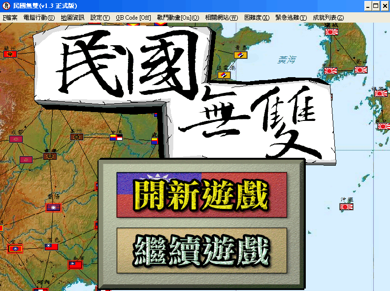
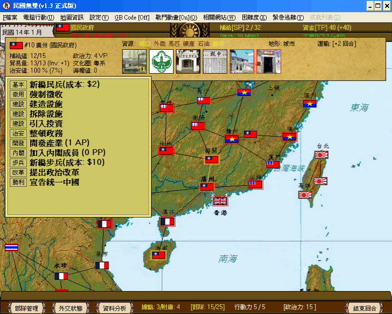
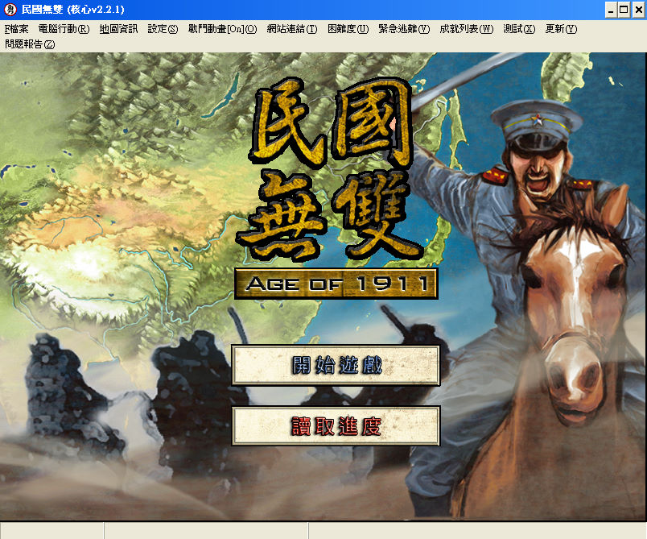
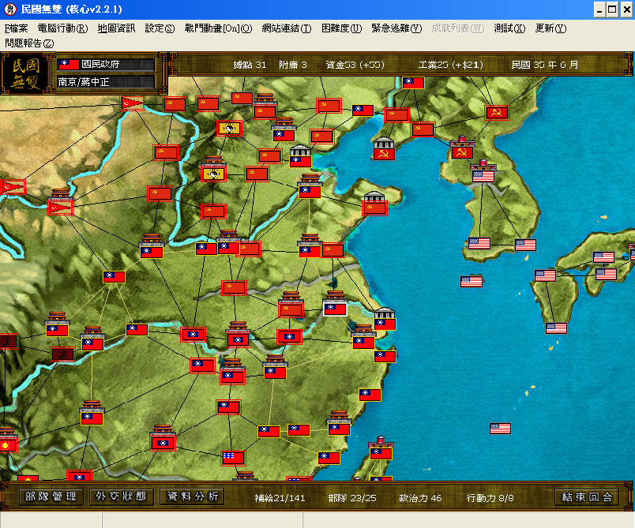

名稱：民國無雙 (中文版) 簡介：網友chenglap 2010年自製的免費回合策略遊戲 [待補]。



備註：本版為2011年1.3正式版 保護：無 備註：VirtualBox執行1.3版時，需搭配WineD3D（2.2.1版不用），或在VMware上執行。 備註：2.2.1版比1.3版多了一個「海棠殘夢」戰役（國共之爭）。若無法執行KowlooniaLoader， 可直接執行Kowloon.exe。 檔案：kowloon221.rar = 2019年2.2.1版（執行檔Kowloon.exe會被報毒，請自行斟酌，或使 用另附的2.1.1版執行檔）